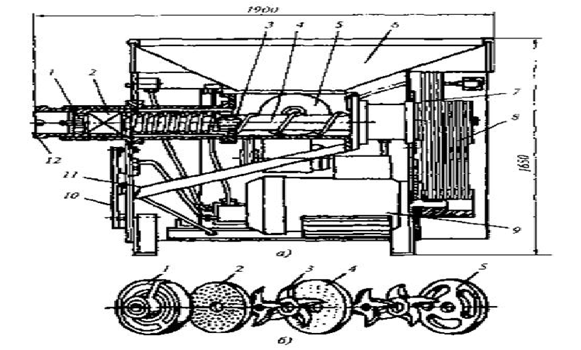

<!DOCTYPE html PUBLIC "-//W3C//DTD XHTML 1.0 Strict//EN" "http://www.w3.org/TR/xhtml1/DTD/xhtml1-strict.dtd">
<html xmlns="http://www.w3.org/1999/xhtml">
<head>
<meta name="keywords" content="" />
<meta name="description" content="Очередной сайт, созданный при помощи TurboSite" />
<meta http-equiv="content-type" content="text/html; charset=utf-8" />
<title>волчок К7 ФВП 160-01 - Электронный учебник</title>
<link href="style.css" rel="stylesheet" type="text/css" media="screen" />
<script type="text/javascript" src="jwplayer/jwplayer.js"></script>
<meta name="generator" content="TurboSite 1.7.1" />

</head>

<body>
<div id="wrapper">
	<div id="header-wrapper">
	<div id="header">
		<div id="logo">
			<h1><a href="index.html">Электронный учебник</a></h1>
			<p>Технология производсва варенных колбас</p>
		</div>
	</div>
	</div>
	<!-- end #header -->
	<div id="page">
	<div id="page-bgtop">
	<div id="page-bgbtm">
		<div id="content">
			<div class="post">
				<h2 class="title">волчок К7 ФВП 160-01</h2>
				<div style="clear: both;">&nbsp;</div>
				<div class="entry">
					
<BLOCKQUOTE>
  <P class=MsoNormal 
  style="BACKGROUND: white; MARGIN: 0cm 0cm 0pt -1cm; LINE-HEIGHT: normal; TEXT-INDENT: 1cm"><B><SPAN 
  style='FONT-SIZE: 14pt; FONT-FAMILY: "Times New Roman","serif"; COLOR: black; mso-fareast-font-family: "Times New Roman"; mso-fareast-language: RU'>Волчок 
  К7-ФВП-160-1 </SPAN></B><SPAN 
  style='FONT-SIZE: 14pt; FONT-FAMILY: "Times New Roman","serif"; COLOR: black; mso-fareast-font-family: "Times New Roman"; mso-fareast-language: RU'>используется 
  для среднего и мелкого измельчения мясного сырья <o:p></o:p></SPAN></P>
  <P class=MsoNormal 
  style="BACKGROUND: white; MARGIN: 11.25pt 0cm 0pt; LINE-HEIGHT: normal"><SPAN 
  style='FONT-SIZE: 17pt; FONT-FAMILY: "Arial","sans-serif"; COLOR: black; mso-fareast-font-family: "Times New Roman"; mso-fareast-language: RU; mso-no-proof: yes'><v:shapetype 
  id=_x0000_t75 coordsize="21600,21600" o:spt="75" o:preferrelative="t" 
  path="m@4@5l@4@11@9@11@9@5xe" filled="f" stroked="f"><v:stroke 
  joinstyle="miter"></v:stroke><v:formulas><v:f 
  eqn="if lineDrawn pixelLineWidth 0"></v:f><v:f eqn="sum @0 1 0"></v:f><v:f 
  eqn="sum 0 0 @1"></v:f><v:f eqn="prod @2 1 2"></v:f><v:f 
  eqn="prod @3 21600 pixelWidth"></v:f><v:f 
  eqn="prod @3 21600 pixelHeight"></v:f><v:f eqn="sum @0 0 1"></v:f><v:f 
  eqn="prod @6 1 2"></v:f><v:f eqn="prod @7 21600 pixelWidth"></v:f><v:f 
  eqn="sum @8 21600 0"></v:f><v:f eqn="prod @7 21600 pixelHeight"></v:f><v:f 
  eqn="sum @10 21600 0"></v:f></v:formulas><v:path o:extrusionok="f" 
  gradientshapeok="t" o:connecttype="rect"></v:path><o:lock v:ext="edit" 
  aspectratio="t"></o:lock></v:shapetype></SPAN><SPAN 
  style='FONT-SIZE: 17pt; FONT-FAMILY: "Arial","sans-serif"; COLOR: black; mso-fareast-font-family: "Times New Roman"; mso-fareast-language: RU'><o:p></o:p></SPAN></P>
  <P class=MsoNormal 
  style="BACKGROUND: white; TEXT-ALIGN: center; MARGIN: 0cm 0cm 0pt 21.3pt; LINE-HEIGHT: normal" 
  align=center><B><SPAN 
  style='FONT-SIZE: 14pt; FONT-FAMILY: "Times New Roman","serif"; COLOR: black; mso-fareast-font-family: "Times New Roman"; mso-fareast-language: RU'>Рис. 
  Волчок К7-ФВП-160-1</SPAN></B><SPAN 
  style='FONT-SIZE: 14pt; FONT-FAMILY: "Times New Roman","serif"; COLOR: black; mso-fareast-font-family: "Times New Roman"; mso-fareast-language: RU'>:<o:p></o:p></SPAN></P>
  <P class=MsoNormal 
  style="BACKGROUND: white; TEXT-ALIGN: center; MARGIN: 11.25pt 0cm 0pt 21.3pt; LINE-HEIGHT: normal" 
  align=center><SPAN 
  style='FONT-SIZE: 14pt; FONT-FAMILY: "Times New Roman","serif"; COLOR: black; mso-fareast-font-family: "Times New Roman"; mso-fareast-language: RU'>а 
  — схема волчка; б — режущий механизм<o:p></o:p></SPAN></P>
  <P class=MsoNormal 
  style="BACKGROUND: white; MARGIN: 0cm 0cm 0pt; LINE-HEIGHT: normal"><B><U><SPAN 
  style='FONT-SIZE: 17pt; FONT-FAMILY: "OpenSansBold","serif"; COLOR: black; mso-fareast-font-family: "Times New Roman"; mso-fareast-language: RU; mso-bidi-font-size: 11.0pt; mso-bidi-font-family: Arial'><o:p><SPAN 
  style="TEXT-DECORATION: none">&nbsp;</SPAN></o:p></SPAN></U></B></P>
  <P class=MsoNormal 
  style="BACKGROUND: white; MARGIN: 0cm 0cm 0pt -1cm; LINE-HEIGHT: normal; TEXT-INDENT: 1cm"><B><U><SPAN 
  style='FONT-SIZE: 14pt; FONT-FAMILY: "Times New Roman","serif"; COLOR: black; mso-fareast-font-family: "Times New Roman"; mso-fareast-language: RU'>а 
  — схема волчка</SPAN></U></B><SPAN 
  style='FONT-SIZE: 14pt; FONT-FAMILY: "Times New Roman","serif"; COLOR: black; mso-fareast-font-family: "Times New Roman"; mso-fareast-language: RU'><o:p></o:p></SPAN></P>
  <P class=MsoNormal 
  style="BACKGROUND: white; MARGIN: 11.25pt 0cm 0pt -1cm; LINE-HEIGHT: normal; TEXT-INDENT: 1cm"><SPAN 
  style='FONT-SIZE: 14pt; FONT-FAMILY: "Times New Roman","serif"; COLOR: black; mso-fareast-font-family: "Times New Roman"; mso-fareast-language: RU'>1 
  – подпорная решетка; 2- режущий механизм; 3 – ножевой вал; 4 – шнеки; 5 – 
  одновитковая лопасть; 6 – бункер; 7 – клиноременная передача; 8 – 
  клиноременная передача ножевого вала; 9 – электродвигатель; 10 – площадка для 
  санитарной обработки; 11 – желоб; 12 – трубчатая насадка<o:p></o:p></SPAN></P>
  <P class=MsoNormal 
  style="BACKGROUND: white; MARGIN: 11.25pt 0cm 0pt -1cm; LINE-HEIGHT: normal; TEXT-INDENT: 1cm"><SPAN 
  style='FONT-SIZE: 14pt; FONT-FAMILY: "Times New Roman","serif"; COLOR: black; mso-fareast-font-family: "Times New Roman"; mso-fareast-language: RU'>Волчок 
  включает в себя 4 основных механизма:<o:p></o:p></SPAN></P>
  <P class=MsoNormal 
  style="BACKGROUND: white; MARGIN: 11.25pt 0cm 0pt -1cm; LINE-HEIGHT: normal; TEXT-INDENT: 1cm"><SPAN 
  style='FONT-SIZE: 14pt; FONT-FAMILY: "Times New Roman","serif"; COLOR: black; mso-fareast-font-family: "Times New Roman"; mso-fareast-language: RU'>1. 
  Питающий механизм:<o:p></o:p></SPAN></P>
  <P class=MsoNormal 
  style="BACKGROUND: white; MARGIN: 11.25pt 0cm 0pt -1cm; LINE-HEIGHT: normal; TEXT-INDENT: 1cm"><SPAN 
  style='FONT-SIZE: 14pt; FONT-FAMILY: "Times New Roman","serif"; COLOR: black; mso-fareast-font-family: "Times New Roman"; mso-fareast-language: RU'>- 
  бункер. Загрузочный бункер под шнеком имеет отсевающие 
  ребра.<o:p></o:p></SPAN></P>
  <P class=MsoNormal 
  style="BACKGROUND: white; MARGIN: 11.25pt 0cm 0pt -1cm; LINE-HEIGHT: normal; TEXT-INDENT: 1cm"><SPAN 
  style='FONT-SIZE: 14pt; FONT-FAMILY: "Times New Roman","serif"; COLOR: black; mso-fareast-font-family: "Times New Roman"; mso-fareast-language: RU'>- 
  шнеки. Рабочий шнек имеет частоту вращения 3,3 с-1. В месте загрузки рабочий 
  шнек имеет впадины для заполнения продуктом.<o:p></o:p></SPAN></P>
  <P class=MsoNormal 
  style="BACKGROUND: white; MARGIN: 0cm 0cm 0pt -1cm; LINE-HEIGHT: normal; TEXT-INDENT: 1cm"><B><SPAN 
  style='FONT-SIZE: 14pt; FONT-FAMILY: "Times New Roman","serif"; COLOR: black; mso-fareast-font-family: "Times New Roman"; mso-fareast-language: RU'><o:p>&nbsp;</o:p></SPAN></B></P>
  <P class=MsoNormal 
  style="BACKGROUND: white; MARGIN: 0cm 0cm 0pt -1cm; LINE-HEIGHT: normal; TEXT-INDENT: 1cm"><B><SPAN 
  style='FONT-SIZE: 14pt; FONT-FAMILY: "Times New Roman","serif"; COLOR: black; mso-fareast-font-family: "Times New Roman"; mso-fareast-language: RU'>2.&nbsp;<U>б 
  — режущий механизм:</U></SPAN></B><SPAN 
  style='FONT-SIZE: 14pt; FONT-FAMILY: "Times New Roman","serif"; COLOR: black; mso-fareast-font-family: "Times New Roman"; mso-fareast-language: RU'><o:p></o:p></SPAN></P>
  <P class=MsoNormal 
  style="BACKGROUND: white; MARGIN: 11.25pt 0cm 0pt -1cm; LINE-HEIGHT: normal; TEXT-INDENT: 1cm"><SPAN 
  style='FONT-SIZE: 14pt; FONT-FAMILY: "Times New Roman","serif"; COLOR: black; mso-fareast-font-family: "Times New Roman"; mso-fareast-language: RU'>1 
  – подпорная решетка; 2 – выходная решетка; 3 – ножи; 4 – промежуточная 
  решетка; 5 – приемная решетка<o:p></o:p></SPAN></P>
  <P class=MsoNormal 
  style="BACKGROUND: white; MARGIN: 11.25pt 0cm 0pt -1cm; LINE-HEIGHT: normal; TEXT-INDENT: 1cm"><SPAN 
  style='FONT-SIZE: 14pt; FONT-FAMILY: "Times New Roman","serif"; COLOR: black; mso-fareast-font-family: "Times New Roman"; mso-fareast-language: RU'>Режущий 
  механизм состоит из:<o:p></o:p></SPAN></P>
  <P class=MsoNormal 
  style="BACKGROUND: white; MARGIN: 11.25pt 0cm 0pt -1cm; LINE-HEIGHT: normal; TEXT-INDENT: 1cm"><SPAN 
  style='FONT-SIZE: 14pt; FONT-FAMILY: "Times New Roman","serif"; COLOR: black; mso-fareast-font-family: "Times New Roman"; mso-fareast-language: RU'>· 
  подпорной решетки<o:p></o:p></SPAN></P>
  <P class=MsoNormal 
  style="BACKGROUND: white; MARGIN: 11.25pt 0cm 0pt -1cm; LINE-HEIGHT: normal; TEXT-INDENT: 1cm"><SPAN 
  style='FONT-SIZE: 14pt; FONT-FAMILY: "Times New Roman","serif"; COLOR: black; mso-fareast-font-family: "Times New Roman"; mso-fareast-language: RU'>· 
  выходной ножевой решетки<o:p></o:p></SPAN></P>
  <P class=MsoNormal 
  style="BACKGROUND: white; MARGIN: 11.25pt 0cm 0pt -1cm; LINE-HEIGHT: normal; TEXT-INDENT: 1cm"><SPAN 
  style='FONT-SIZE: 14pt; FONT-FAMILY: "Times New Roman","serif"; COLOR: black; mso-fareast-font-family: "Times New Roman"; mso-fareast-language: RU'>· 
  ножей, которые выполнены из двух частей и имеют криволинейные зубья. Между 
  зубьями расположены каналы для продукта. Часто та вращения ножей – 8,3 с-1 .Во 
  вращение ножи приводит вал, который проходит внутри рабочего шнека и имеет 
  самостоятельный привод<o:p></o:p></SPAN></P>
  <P class=MsoNormal 
  style="BACKGROUND: white; MARGIN: 11.25pt 0cm 0pt -1cm; LINE-HEIGHT: normal; TEXT-INDENT: 1cm"><SPAN 
  style='FONT-SIZE: 14pt; FONT-FAMILY: "Times New Roman","serif"; COLOR: black; mso-fareast-font-family: "Times New Roman"; mso-fareast-language: RU'>· 
  промежуточной и приемной решеток. Выходная решетка поджимается жесткой 
  подпорой с радиальными заостренными ребрами и имеет толщину 8 мм. Конструкция 
  этой подпоры позволяет применять решетки толщиной до 
3,0.<o:p></o:p></SPAN></P>
  <P class=MsoNormal 
  style="BACKGROUND: white; MARGIN: 11.25pt 0cm 0pt -1cm; LINE-HEIGHT: normal; TEXT-INDENT: 1cm"><SPAN 
  style='FONT-SIZE: 14pt; FONT-FAMILY: "Times New Roman","serif"; COLOR: black; mso-fareast-font-family: "Times New Roman"; mso-fareast-language: RU'>· 
  цилиндра с внутренними ребрами и гайкой-маховиком с трубчатой 
  насадкой<o:p></o:p></SPAN></P>
  <P class=MsoNormal 
  style="BACKGROUND: white; MARGIN: 11.25pt 0cm 0pt -1cm; LINE-HEIGHT: normal; TEXT-INDENT: 1cm"><SPAN 
  style='FONT-SIZE: 14pt; FONT-FAMILY: "Times New Roman","serif"; COLOR: black; mso-fareast-font-family: "Times New Roman"; mso-fareast-language: RU'>3. 
  Привод:<o:p></o:p></SPAN></P>
  <P class=MsoNormal 
  style="BACKGROUND: white; MARGIN: 11.25pt 0cm 0pt -1cm; LINE-HEIGHT: normal; TEXT-INDENT: 1cm"><SPAN 
  style='FONT-SIZE: 14pt; FONT-FAMILY: "Times New Roman","serif"; COLOR: black; mso-fareast-font-family: "Times New Roman"; mso-fareast-language: RU'>- 
  электродвигатель<o:p></o:p></SPAN></P>
  <P class=MsoNormal 
  style="BACKGROUND: white; MARGIN: 11.25pt 0cm 0pt -1cm; LINE-HEIGHT: normal; TEXT-INDENT: 1cm"><SPAN 
  style='FONT-SIZE: 14pt; FONT-FAMILY: "Times New Roman","serif"; COLOR: black; mso-fareast-font-family: "Times New Roman"; mso-fareast-language: RU'>- 
  цилиндрический редуктор<o:p></o:p></SPAN></P>
  <P class=MsoNormal 
  style="BACKGROUND: white; MARGIN: 11.25pt 0cm 0pt -1cm; LINE-HEIGHT: normal; TEXT-INDENT: 1cm"><SPAN 
  style='FONT-SIZE: 14pt; FONT-FAMILY: "Times New Roman","serif"; COLOR: black; mso-fareast-font-family: "Times New Roman"; mso-fareast-language: RU'>- 
  клиноременная передача<o:p></o:p></SPAN></P>
  <P class=MsoNormal 
  style="BACKGROUND: white; MARGIN: 11.25pt 0cm 0pt -1cm; LINE-HEIGHT: normal; TEXT-INDENT: 1cm"><SPAN 
  style='FONT-SIZE: 14pt; FONT-FAMILY: "Times New Roman","serif"; COLOR: black; mso-fareast-font-family: "Times New Roman"; mso-fareast-language: RU'>4. 
  Станина, на которой монтируются:<o:p></o:p></SPAN></P>
  <P class=MsoNormal 
  style="BACKGROUND: white; MARGIN: 11.25pt 0cm 0pt -1cm; LINE-HEIGHT: normal; TEXT-INDENT: 1cm"><SPAN 
  style='FONT-SIZE: 14pt; FONT-FAMILY: "Times New Roman","serif"; COLOR: black; mso-fareast-font-family: "Times New Roman"; mso-fareast-language: RU'>- 
  все детали,<o:p></o:p></SPAN></P>
  <P class=MsoNormal 
  style="BACKGROUND: white; MARGIN: 11.25pt 0cm 0pt -1cm; LINE-HEIGHT: normal; TEXT-INDENT: 1cm"><SPAN 
  style='FONT-SIZE: 14pt; FONT-FAMILY: "Times New Roman","serif"; COLOR: black; mso-fareast-font-family: "Times New Roman"; mso-fareast-language: RU'>- 
  сборочные единицы<o:p></o:p></SPAN></P>
  <P class=MsoNormal 
  style="BACKGROUND: white; MARGIN: 11.25pt 0cm 0pt -1cm; LINE-HEIGHT: normal; TEXT-INDENT: 1cm"><SPAN 
  style='FONT-SIZE: 14pt; FONT-FAMILY: "Times New Roman","serif"; COLOR: black; mso-fareast-font-family: "Times New Roman"; mso-fareast-language: RU'>- 
  электродвигатель<o:p></o:p></SPAN></P>
  <P class=MsoNormal 
  style="BACKGROUND: white; MARGIN: 11.25pt 0cm 0pt -1cm; LINE-HEIGHT: normal; TEXT-INDENT: 1cm"><SPAN 
  style='FONT-SIZE: 14pt; FONT-FAMILY: "Times New Roman","serif"; COLOR: black; mso-fareast-font-family: "Times New Roman"; mso-fareast-language: RU'>- 
  пусковая электроаппаратура<o:p></o:p></SPAN></P>
  <P class=MsoNormal 
  style="BACKGROUND: white; MARGIN: 11.25pt 0cm 0pt -1cm; LINE-HEIGHT: normal; TEXT-INDENT: 1cm"><SPAN 
  style='FONT-SIZE: 14pt; FONT-FAMILY: "Times New Roman","serif"; COLOR: black; mso-fareast-font-family: "Times New Roman"; mso-fareast-language: RU'>Помимо 
  этого волчок включает в себя:<o:p></o:p></SPAN></P>
  <P class=MsoNormal 
  style="BACKGROUND: white; MARGIN: 11.25pt 0cm 0pt -1cm; LINE-HEIGHT: normal; TEXT-INDENT: 1cm"><SPAN 
  style='FONT-SIZE: 14pt; FONT-FAMILY: "Times New Roman","serif"; COLOR: black; mso-fareast-font-family: "Times New Roman"; mso-fareast-language: RU'>- 
  подпорную решетку<o:p></o:p></SPAN></P>
  <P class=MsoNormal 
  style="BACKGROUND: white; MARGIN: 11.25pt 0cm 0pt -1cm; LINE-HEIGHT: normal; TEXT-INDENT: 1cm"><SPAN 
  style='FONT-SIZE: 14pt; FONT-FAMILY: "Times New Roman","serif"; COLOR: black; mso-fareast-font-family: "Times New Roman"; mso-fareast-language: RU'>- 
  ножевой вал<o:p></o:p></SPAN></P>
  <P class=MsoNormal 
  style="BACKGROUND: white; MARGIN: 11.25pt 0cm 0pt -1cm; LINE-HEIGHT: normal; TEXT-INDENT: 1cm"><SPAN 
  style='FONT-SIZE: 14pt; FONT-FAMILY: "Times New Roman","serif"; COLOR: black; mso-fareast-font-family: "Times New Roman"; mso-fareast-language: RU'>- 
  одновитковую лопасть<o:p></o:p></SPAN></P>
  <P class=MsoNormal 
  style="BACKGROUND: white; MARGIN: 11.25pt 0cm 0pt -1cm; LINE-HEIGHT: normal; TEXT-INDENT: 1cm"><SPAN 
  style='FONT-SIZE: 14pt; FONT-FAMILY: "Times New Roman","serif"; COLOR: black; mso-fareast-font-family: "Times New Roman"; mso-fareast-language: RU'>- 
  клиноременную передачу ножевого вала<o:p></o:p></SPAN></P>
  <P class=MsoNormal 
  style="BACKGROUND: white; MARGIN: 11.25pt 0cm 0pt -1cm; LINE-HEIGHT: normal; TEXT-INDENT: 1cm"><SPAN 
  style='FONT-SIZE: 14pt; FONT-FAMILY: "Times New Roman","serif"; COLOR: black; mso-fareast-font-family: "Times New Roman"; mso-fareast-language: RU'>- 
  площадку для санитарной обработки<o:p></o:p></SPAN></P>
  <P class=MsoNormal 
  style="BACKGROUND: white; MARGIN: 11.25pt 0cm 0pt -1cm; LINE-HEIGHT: normal; TEXT-INDENT: 1cm"><SPAN 
  style='FONT-SIZE: 14pt; FONT-FAMILY: "Times New Roman","serif"; COLOR: black; mso-fareast-font-family: "Times New Roman"; mso-fareast-language: RU'>- 
  желоб<o:p></o:p></SPAN></P>
  <P class=MsoNormal 
  style="BACKGROUND: white; MARGIN: 11.25pt 0cm 0pt -1cm; LINE-HEIGHT: normal; TEXT-INDENT: 1cm"><SPAN 
  style='FONT-SIZE: 14pt; FONT-FAMILY: "Times New Roman","serif"; COLOR: black; mso-fareast-font-family: "Times New Roman"; mso-fareast-language: RU'>- 
  трубчатую насадку</SPAN></P>
  <P class=MsoNormal 
  style="BACKGROUND: white; MARGIN: 11.25pt 0cm 0pt -1cm; LINE-HEIGHT: normal; TEXT-INDENT: 1cm"><SPAN 
  style='FONT-SIZE: 14pt; FONT-FAMILY: "Times New Roman","serif"; COLOR: black; mso-fareast-font-family: "Times New Roman"; mso-fareast-language: RU'><o:p></o:p></SPAN>&nbsp;</P>
  <P class=MsoNormal 
  style="BACKGROUND: white; MARGIN: 0cm 0cm 0pt -1cm; LINE-HEIGHT: normal; TEXT-INDENT: 1cm"><B><SPAN 
  style='FONT-SIZE: 14pt; FONT-FAMILY: "Times New Roman","serif"; COLOR: black; mso-fareast-font-family: "Times New Roman"; mso-fareast-language: RU'>Принцип 
  работы:</SPAN></B><SPAN 
  style='FONT-SIZE: 14pt; FONT-FAMILY: "Times New Roman","serif"; COLOR: black; mso-fareast-font-family: "Times New Roman"; mso-fareast-language: RU'><o:p></o:p></SPAN></P>
  <P class=MsoNormal 
  style="BACKGROUND: white; MARGIN: 11.25pt 0cm 0pt -1cm; LINE-HEIGHT: normal; TEXT-INDENT: 1cm"><SPAN 
  style='FONT-SIZE: 14pt; FONT-FAMILY: "Times New Roman","serif"; COLOR: black; mso-fareast-font-family: "Times New Roman"; mso-fareast-language: RU'>Жилованное 
  мясо в кусках (до 0,5 кг) подается в бункер. Из бункера мясо захватывается 
  рабочим и вспомогательным шнеками и затем направляется в зону режущего 
  механизма. Так сырье измельчается до заданной степени, которая устанавливается 
  путем установки ножей и ножевых решеток с соответствующими диаметрами 
  отверстий.<o:p></o:p></SPAN></P>
  <P class=MsoNormal 
  style="BACKGROUND: white; MARGIN: 11.25pt 0cm 0pt; LINE-HEIGHT: normal"><SPAN 
  style='FONT-SIZE: 17pt; FONT-FAMILY: "Arial","sans-serif"; COLOR: black; mso-fareast-font-family: "Times New Roman"; mso-fareast-language: RU'><o:p>&nbsp;</o:p></SPAN></P>
  <P class=MsoNormal 
  style="BACKGROUND: white; MARGIN: 0cm 0cm 0pt -14.2pt; LINE-HEIGHT: normal"><B><SPAN 
  style='FONT-SIZE: 14pt; FONT-FAMILY: "Times New Roman","serif"; COLOR: black; mso-fareast-font-family: "Times New Roman"; mso-fareast-language: RU'>Техническая 
  характеристика волчка К7-ФВП-160-1<o:p></o:p></SPAN></B></P>
  <P class=MsoNormal 
  style="BACKGROUND: white; MARGIN: 0cm 0cm 0pt -14.2pt; LINE-HEIGHT: normal"><SPAN 
  style='FONT-SIZE: 14pt; FONT-FAMILY: "Times New Roman","serif"; COLOR: black; mso-fareast-font-family: "Times New Roman"; mso-fareast-language: RU'><o:p>&nbsp;</P>
  <P class=MsoNormal 
  style="BACKGROUND: white; MARGIN: 0cm 0cm 0pt -14.2pt; LINE-HEIGHT: normal">
  <TABLE class=MsoNormalTable 
  style="WIDTH: 375.35pt; MARGIN: auto auto auto -13.45pt; mso-cellspacing: 0cm; mso-yfti-tbllook: 1184; mso-padding-alt: 0cm 0cm 0cm 0cm" 
  cellSpacing=0 cellPadding=0 width=500 border=1>
    <TBODY>
    <TR style="HEIGHT: 28pt; mso-yfti-irow: 0; mso-yfti-firstrow: yes">
      <TD 
      style="BORDER-TOP: #f0f0f0; HEIGHT: 28pt; BORDER-RIGHT: #f0f0f0; WIDTH: 192.75pt; BORDER-BOTTOM: #f0f0f0; PADDING-BOTTOM: 0cm; PADDING-TOP: 0cm; PADDING-LEFT: 0cm; BORDER-LEFT: #f0f0f0; PADDING-RIGHT: 0cm; BACKGROUND-COLOR: transparent" 
      width=257>
        <P class=MsoNormal 
        style="TEXT-ALIGN: center; MARGIN: 0cm 0cm 0pt; mso-line-height-alt: 9.55pt" 
        align=center><SPAN 
        style='FONT-SIZE: 14pt; FONT-FAMILY: "Times New Roman","serif"; mso-fareast-font-family: "Times New Roman"; mso-fareast-language: RU'>Производительность, 
        кг/ч<o:p></o:p></SPAN></P></TD>
      <TD 
      style="BORDER-TOP: #f0f0f0; HEIGHT: 28pt; BORDER-RIGHT: #f0f0f0; WIDTH: 182.6pt; BORDER-BOTTOM: #f0f0f0; PADDING-BOTTOM: 0cm; PADDING-TOP: 0cm; PADDING-LEFT: 0cm; BORDER-LEFT: #f0f0f0; PADDING-RIGHT: 0cm; BACKGROUND-COLOR: transparent" 
      width=243>
        <P class=MsoNormal 
        style="TEXT-ALIGN: center; MARGIN: 0cm 0cm 0pt; mso-line-height-alt: 9.55pt" 
        align=center><SPAN 
        style='FONT-SIZE: 14pt; FONT-FAMILY: "Times New Roman","serif"; mso-fareast-font-family: "Times New Roman"; mso-fareast-language: RU'>5000<o:p></o:p></SPAN></P></TD></TR>
    <TR style="HEIGHT: 28pt; mso-yfti-irow: 1">
      <TD 
      style="BORDER-TOP: #f0f0f0; HEIGHT: 28pt; BORDER-RIGHT: #f0f0f0; WIDTH: 192.75pt; BORDER-BOTTOM: #f0f0f0; PADDING-BOTTOM: 0cm; PADDING-TOP: 0cm; PADDING-LEFT: 0cm; BORDER-LEFT: #f0f0f0; PADDING-RIGHT: 0cm; BACKGROUND-COLOR: transparent" 
      width=257>
        <P class=MsoNormal 
        style="TEXT-ALIGN: center; MARGIN: 0cm 0cm 0pt; mso-line-height-alt: 9.55pt" 
        align=center><SPAN 
        style='FONT-SIZE: 14pt; FONT-FAMILY: "Times New Roman","serif"; mso-fareast-font-family: "Times New Roman"; mso-fareast-language: RU'>Диаметр 
        решеток режущего механизма, мм<o:p></o:p></SPAN></P></TD>
      <TD 
      style="BORDER-TOP: #f0f0f0; HEIGHT: 28pt; BORDER-RIGHT: #f0f0f0; WIDTH: 182.6pt; BORDER-BOTTOM: #f0f0f0; PADDING-BOTTOM: 0cm; PADDING-TOP: 0cm; PADDING-LEFT: 0cm; BORDER-LEFT: #f0f0f0; PADDING-RIGHT: 0cm; BACKGROUND-COLOR: transparent" 
      width=243>
        <P class=MsoNormal 
        style="TEXT-ALIGN: center; MARGIN: 0cm 0cm 0pt; mso-line-height-alt: 9.55pt" 
        align=center><SPAN 
        style='FONT-SIZE: 14pt; FONT-FAMILY: "Times New Roman","serif"; mso-fareast-font-family: "Times New Roman"; mso-fareast-language: RU'>160<o:p></o:p></SPAN></P></TD></TR>
    <TR style="HEIGHT: 30pt; mso-yfti-irow: 2">
      <TD 
      style="BORDER-TOP: #f0f0f0; HEIGHT: 30pt; BORDER-RIGHT: #f0f0f0; WIDTH: 192.75pt; BORDER-BOTTOM: #f0f0f0; PADDING-BOTTOM: 0cm; PADDING-TOP: 0cm; PADDING-LEFT: 0cm; BORDER-LEFT: #f0f0f0; PADDING-RIGHT: 0cm; BACKGROUND-COLOR: transparent" 
      width=257>
        <P class=MsoNormal 
        style="TEXT-ALIGN: center; MARGIN: 0cm 0cm 0pt; mso-line-height-alt: 9.55pt" 
        align=center><SPAN 
        style='FONT-SIZE: 14pt; FONT-FAMILY: "Times New Roman","serif"; mso-fareast-font-family: "Times New Roman"; mso-fareast-language: RU'>Установленная 
        мощность, кВт<o:p></o:p></SPAN></P></TD>
      <TD 
      style="BORDER-TOP: #f0f0f0; HEIGHT: 30pt; BORDER-RIGHT: #f0f0f0; WIDTH: 182.6pt; BORDER-BOTTOM: #f0f0f0; PADDING-BOTTOM: 0cm; PADDING-TOP: 0cm; PADDING-LEFT: 0cm; BORDER-LEFT: #f0f0f0; PADDING-RIGHT: 0cm; BACKGROUND-COLOR: transparent" 
      width=243>
        <P class=MsoNormal 
        style="TEXT-ALIGN: center; MARGIN: 0cm 0cm 0pt; mso-line-height-alt: 9.55pt" 
        align=center><SPAN 
        style='FONT-SIZE: 14pt; FONT-FAMILY: "Times New Roman","serif"; mso-fareast-font-family: "Times New Roman"; mso-fareast-language: RU'>32,5<o:p></o:p></SPAN></P></TD></TR>
    <TR style="HEIGHT: 28pt; mso-yfti-irow: 3">
      <TD 
      style="BORDER-TOP: #f0f0f0; HEIGHT: 28pt; BORDER-RIGHT: #f0f0f0; WIDTH: 192.75pt; BORDER-BOTTOM: #f0f0f0; PADDING-BOTTOM: 0cm; PADDING-TOP: 0cm; PADDING-LEFT: 0cm; BORDER-LEFT: #f0f0f0; PADDING-RIGHT: 0cm; BACKGROUND-COLOR: transparent" 
      width=257>
        <P class=MsoNormal 
        style="TEXT-ALIGN: center; MARGIN: 0cm 0cm 0pt; mso-line-height-alt: 9.55pt" 
        align=center><SPAN 
        style='FONT-SIZE: 14pt; FONT-FAMILY: "Times New Roman","serif"; mso-fareast-font-family: "Times New Roman"; mso-fareast-language: RU'>Габаритные 
        размеры, мм<o:p></o:p></SPAN></P></TD>
      <TD 
      style="BORDER-TOP: #f0f0f0; HEIGHT: 28pt; BORDER-RIGHT: #f0f0f0; WIDTH: 182.6pt; BORDER-BOTTOM: #f0f0f0; PADDING-BOTTOM: 0cm; PADDING-TOP: 0cm; PADDING-LEFT: 0cm; BORDER-LEFT: #f0f0f0; PADDING-RIGHT: 0cm; BACKGROUND-COLOR: transparent" 
      width=243>
        <P class=MsoNormal 
        style="TEXT-ALIGN: center; MARGIN: 0cm 0cm 0pt; mso-line-height-alt: 9.55pt" 
        align=center><SPAN 
        style='FONT-SIZE: 14pt; FONT-FAMILY: "Times New Roman","serif"; mso-fareast-font-family: "Times New Roman"; mso-fareast-language: RU'>1900х1000х1650<o:p></o:p></SPAN></P></TD></TR>
    <TR style="HEIGHT: 30pt; mso-yfti-irow: 4; mso-yfti-lastrow: yes">
      <TD 
      style="BORDER-TOP: #f0f0f0; HEIGHT: 30pt; BORDER-RIGHT: #f0f0f0; WIDTH: 192.75pt; BORDER-BOTTOM: #f0f0f0; PADDING-BOTTOM: 0cm; PADDING-TOP: 0cm; PADDING-LEFT: 0cm; BORDER-LEFT: #f0f0f0; PADDING-RIGHT: 0cm; BACKGROUND-COLOR: transparent" 
      width=257>
        <P class=MsoNormal 
        style="TEXT-ALIGN: center; MARGIN: 0cm 0cm 0pt; mso-line-height-alt: 9.55pt" 
        align=center><SPAN 
        style='FONT-SIZE: 14pt; FONT-FAMILY: "Times New Roman","serif"; mso-fareast-font-family: "Times New Roman"; mso-fareast-language: RU'>Масса, 
        кг<o:p></o:p></SPAN></P></TD>
      <TD 
      style="BORDER-TOP: #f0f0f0; HEIGHT: 30pt; BORDER-RIGHT: #f0f0f0; WIDTH: 182.6pt; BORDER-BOTTOM: #f0f0f0; PADDING-BOTTOM: 0cm; PADDING-TOP: 0cm; PADDING-LEFT: 0cm; BORDER-LEFT: #f0f0f0; PADDING-RIGHT: 0cm; BACKGROUND-COLOR: transparent" 
      width=243>
        <P class=MsoNormal 
        style="TEXT-ALIGN: center; MARGIN: 0cm 0cm 0pt; mso-line-height-alt: 9.55pt" 
        align=center><SPAN 
        style='FONT-SIZE: 14pt; FONT-FAMILY: "Times New Roman","serif"; mso-fareast-font-family: "Times New Roman"; mso-fareast-language: RU'>1200<o:p></o:p></SPAN></P></TD></TR></TBODY></TABLE></P>
  <P class=MsoNormal 
  style="BACKGROUND: white; MARGIN: 0cm 0cm 0pt -14.2pt; LINE-HEIGHT: normal">&nbsp;</P>
  <P class=MsoNormal 
  style="BACKGROUND: white; MARGIN: 0cm 0cm 0pt -14.2pt; LINE-HEIGHT: normal">&nbsp;</P>
  <P class=MsoNormal 
  style="BACKGROUND: white; MARGIN: 0cm 0cm 0pt -14.2pt; LINE-HEIGHT: normal"><div id="24541">Ваш браузер не поддерживает JWPlayer</div><script type="text/javascript">jwplayer('24541').setup({
'flashplayer': 'jwplayer/player.swf',
'file': 'user-video/волчок К7 ФВП 160-01.mpg.mp4',
'skin': 'jwplayer/beelden.zip',
'frontcolor': 'ffffff',
'lightcolor': 'cc9900',
'screencolor': '000000',
'controlbar': 'bottom',
'width': '482',
'height': '240'});
</script></P>
  <P class=MsoNormal 
  style="BACKGROUND: white; MARGIN: 0cm 0cm 0pt -14.2pt; LINE-HEIGHT: normal">&nbsp;</P></o:p></SPAN></BLOCKQUOTE>

				</div>
			</div>
		<div style="clear: both;">&nbsp;</div>
		</div>
		<!-- end #content -->
		<div id="sidebar">
			<ul>
				<li>
					<ul>
						<li><a style="font-weight: bold; " href="index.html">Электронный учебник</a></li>

					</ul>
				</li>
				<li>
					<h2></h2>
					<ul>
						<li><a style="font-weight: bold; " href="page17.html">Содержание</a></li>
<li><a style="font-weight: bold; " href="page2.html">Характеристика сырья и готовой продукции</a></li>
<li><a style="font-weight: bold; " href="page3.html">Технологическая схема производственного процесса</a></li>
<li><a style="" href="page4.html">Подготовка  сырья</a></li>
<li><a style="" href="page5.html">Измельчение мясного сырья</a></li>
<li><a style="" href="page6.html">Посол</a></li>
<li><a style="" href="page7.html">Приготовление фарша</a></li>
<li><a style="" href="page8.html">Формование</a></li>
<li><a style="" href="page9.html">Термическая обработка</a></li>
<li><a style="" href="page10.html">Проверка и упаковывание</a></li>
<li><a style="font-weight: bold; " href="page14.html">Технология производства</a></li>
<li><a style="font-weight: bold; " href="page21.html">Волчок</a></li>
<li><a style="font-weight: bold; " href="page20.html">Фаршемешалка</a></li>
<li><a style="font-weight: bold; " href="page19.html">Куттер</a></li>
<li><a style="font-weight: bold; " href="page29.html">Шпигорезка</a></li>
<li><a style="font-weight: bold; " href="page18.html">Шприц</a></li>
<li><a style="" href="page11.html">волчок PC-160</a></li>
<li class="active"><a style="" href="page22.html">волчок К7 ФВП 160-01</a></li>
<li><a style="" href="page23.html">работа волчка  MG-130</a></li>
<li><a style="" href="page24.html">работа волчка  К7-ФВП-200</a></li>
<li><a style="" href="page25.html">работа волчка  для измельчения замороженного мяса JR</a></li>
<li><a style="" href="page15.html">фаршемешалка VVS200</a></li>
<li><a style="" href="page27.html">Фаршемешалка К6-ФММ-150</a></li>
<li><a style="" href="page26.html">работа фаршемешалки ИПКС-019-150</a></li>
<li><a style="" href="page12.html">куттер Л5-ФБК</a></li>
<li><a style="" href="page28.html">работа куттера вакуумного ВК-125</a></li>
<li><a style="" href="page13.html"> шприц ФШ2-ЛМ</a></li>
<li><a style="" href="page30.html">работа шпигорезки Ruhle SR 1 - SR 1 Turbo</a></li>

					</ul>
				</li>
				
			</ul>
		</div>
		<!-- end #sidebar -->
		<div style="clear: both;">&nbsp;</div>
	</div>
	</div>
	</div>
	<!-- end #page -->
</div>
	<div id="footer">
		<p>Автор:Юртаев Александр; Маскаев Николай </p>
	</div>
	<!-- end #footer -->
</body>
</html>
